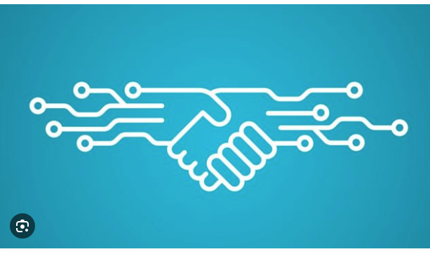
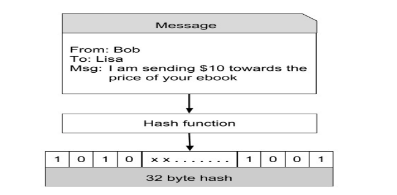
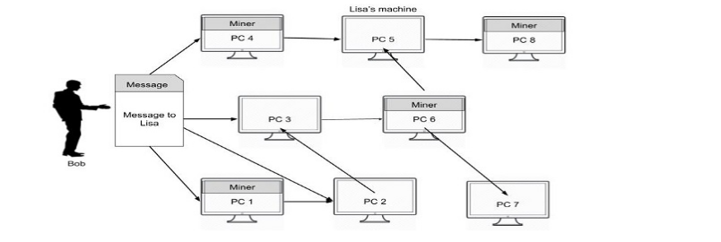

Blockchain:
Una blockchain è una lista crescente di record, chiamati blocchi, che sono collegati tra loro utilizzando la crittografia. Ogni blocco contiene l'hash crittografico del blocco precedente, un timestamp e dati di transazione. La blockchain è stata molto discussa in questi giorni, principalmente perché è il fondamento della famosissima criptovaluta al mondo, il Bitcoin. Molti governi e grandi istituti bancari hanno deciso di basare molte delle loro transazioni convenzionali sul concetto di blockchain. Le applicazioni e il potenziale di questa tecnologia sono enormi e si ritiene possa cambiare il modo in cui vengono effettuate le transazioni in vari settori.

Negli ultimi anni, c'è stata molta attenzione sulla tecnologia blockchain. Molti l'hanno descritta come la tecnologia più rivoluzionaria del decennio. In particolare, i mercati finanziari potrebbero essere quelli più colpiti.
La tecnologia blockchain viene adottata in molti settori, come la sanità, i farmaci, le assicurazioni, le proprietà intelligenti, l'automotive e persino dai governi.
Tuttavia, finora l'implementazione di blockchain di maggior successo è il Bitcoin - un sistema di denaro elettronico peer-to-peer, che incidentalmente è anche la prima implementazione della tecnologia blockchain. Pertanto, per comprendere la tecnologia blockchain, è meglio capire come è progettato e implementato il sistema Bitcoin.
Blockchain funzionamento:
Chiunque desideri ottenere servizi da una terza parte che ha pubblicizzato sulla rete, crea prima una transazione (messaggio per il destinatario desiderato).
Durante un dato periodo di tempo, potrebbero esserci molti mittenti (acquirenti) e destinatari (venditori) che creano tali transazioni.
Tutte le transazioni vengono trasmesse sulla rete a tutti i nodi. Nota che non è necessario che una data transazione raggiunga ogni singolo nodo della rete.

Ogni nodo assembla le nuove transazioni in un blocco. Nota che l'insieme di transazioni in ciascun blocco è indipendente dall'insieme in blocchi creati da altri e sarà naturalmente diverso dagli altri. Questo non importa; il sistema garantisce che ogni transazione trasmessa sulla rete venga inclusa in qualche blocco entro un periodo di tempo ragionevole. In genere, il mittente incentivizzerà il nodo offrendo una certa quantità di bitcoin al minatore per i suoi sforzi. Il minatore potrebbe optare per dare la priorità all'inclusione nel blocco a coloro con incentivi più elevati.

Il nodo ora lavora per trovare la prova di lavoro per il blocco assemblato. Quando il nodo trova una prova di lavoro, diffonde il blocco assemblato sulla rete. I nodi che ricevono il nuovo blocco lo accettano solo dopo aver verificato che tutte le transazioni nel blocco siano valide e che le monete non siano già state spese in altre transazioni precedenti.

Se il blocco viene accettato come valido, il nodo che sta lavorando sul proprio nuovo blocco dovrà riassemblare le transazioni nel suo blocco, assicurandosi che non vi siano duplicazioni. Il nodo lavora quindi per trovare la prova di lavoro per il suo blocco appena creato; durante questo processo, prenderà l'hash del blocco accettato come hash precedente. In questo modo, la blockchain continua a crescere indefinitamente. Man mano che i miner trovano nuove prove di lavoro e aggiungono blocchi alla blockchain, il registro delle transazioni viene continuamente esteso e mantenuto in modo sicuro e immutabile. La catena di blocchi è una sequenza sempre crescente di blocchi, ognuno collegato al precedente tramite i loro hash, formando una struttura a catena che registra tutte le transazioni verificate nella rete Bitcoin.
Blockchain esempio in python:
Nel programma market_new.py andiamo a creare inizialmente due tabelle all'interno del database "talentform" di mysql:
La prima tabella chiamata user, ci servirà per registrare gli utenti nell'applicazione tramite la loro mail e la loro passwprd
class Contocorrente:
import hashlib
import time
class Block:
def __init__(self, index, previous_hash, timestamp, data, hash):
self.index = index
self.previous_hash = previous_hash
self.timestamp = timestamp
self.data = data
self.hash = hash
class Blockchain:
def __init__(self):
self.chain = []
self.create_genesis_block()
def create_genesis_block(self):
# Crea il blocco di genesi
genesis_block = Block(0, "0", time.time(), "Blocco di genesi", self.calculate_hash("0"))
self.chain.append(genesis_block)
def add_block(self, data):
# Aggiunge un nuovo blocco alla blockchain
index = len(self.chain)
previous_hash = self.chain[-1].hash
timestamp = time.time()
hash = self.calculate_hash(str(index) + previous_hash + str(timestamp) + data)
new_block = Block(index, previous_hash, timestamp, data, hash)
self.chain.append(new_block)
def calculate_hash(self, data):
# Calcola l'hash SHA-256 del blocco
return hashlib.sha256(data.encode()).hexdigest()
Nell'esempio sopra, abbiamo definito due classi: Block e Blockchain.
La classe Block rappresenta un singolo blocco all'interno della blockchain e ha i seguenti attributi:
- index: Il numero di sequenza del blocco all'interno della catena.
- previous_hash: L'hash del blocco precedente nella catena. Questo collegamento rende la blockchain immutabile.
- timestamp: L'istante di tempo in cui il blocco è stato creato.
- data: I dati o le transazioni da includere nel blocco.
- hash: L'hash crittografico del blocco, calcolato utilizzando i dati e l'hash del blocco precedente.
- chain: Una lista che contiene i blocchi della blockchain.
- create_genesis_block(): Questo metodo crea il blocco di genesi, che è il primo blocco della catena e non ha un blocco precedente. Il blocco di genesi viene aggiunto alla catena all'inizio.
- add_block(data): Questo metodo aggiunge un nuovo blocco alla catena. Riceve i dati o le transazioni da includere nel nuovo blocco, calcola l'hash del blocco e lo aggiunge alla catena.
- calculate_hash(data): Questo metodo calcola l'hash SHA-256 del blocco utilizzando i dati forniti.